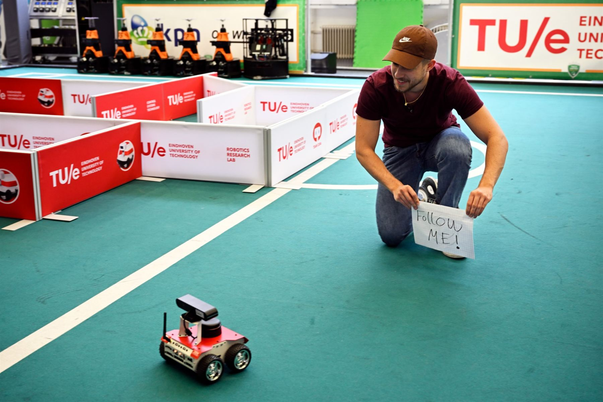
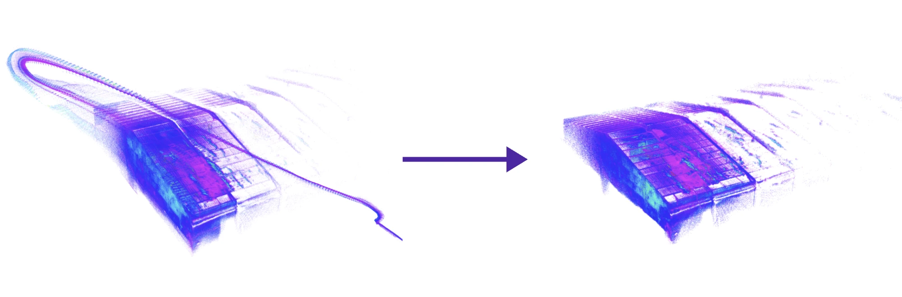
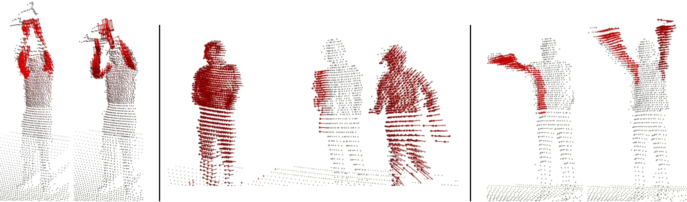
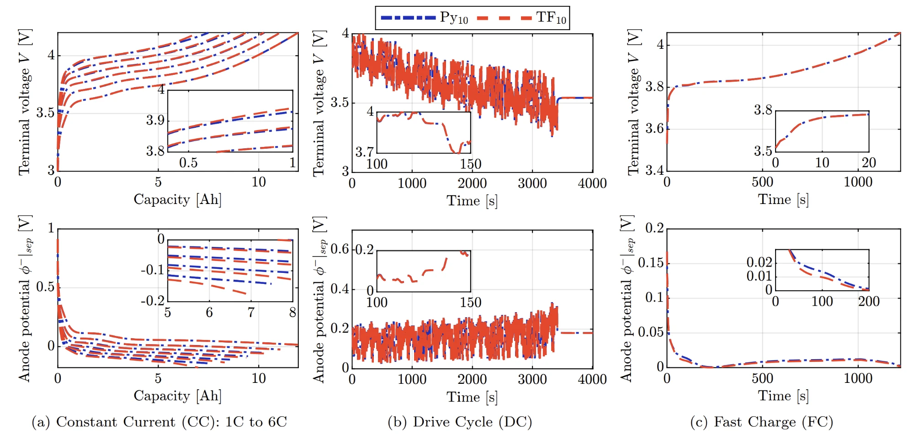
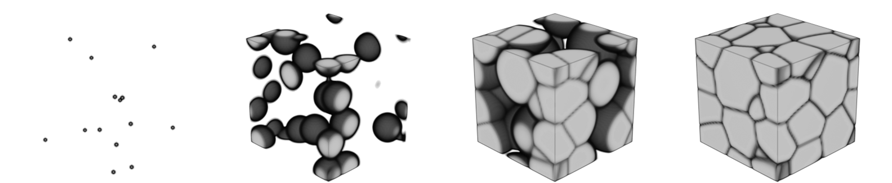
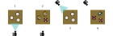

2026

Andres Diaz Aguilar
Robotic perception & embodied AI
About
I'm a second-year MSc student in Mechanical Engineering at ETH Zürich and a research assistant at the Robotic Systems Lab.
My work at ETH has primarily focused on robotic perception, including research in multi-sensor fusion, 3D velocity estimation, and robust LiDAR-inertial odometry. Before ETH, I completed my BSc in Mechanical Engineering at TU Eindhoven, graduating cum laude with the Honors Academy distinction. During my Bachelor's, I worked on active perception for robotics under Prof. Elena Torta as part of the Honors Academy program, and later interned at the Netherlands Organisation for Applied Scientific Research (TNO), working on battery modeling and fast-charging control research for electric vehicles.
My research interests include robot learning, reinforcement learning, and the intersection of learning-based and model-based control. I'm currently looking for a Master's thesis in robot learning and control. If you're working on something interesting in this space, get in touch.
Publications
2025
Unlocking Electrochemical Battery Modelling: An Open-Source Suite Comparison Methodology
A. M. Diaz Aguilar, A. Lodge, F. Hoekstra
2025
Why is PyBaMM so P(y)opular? A Comparative Analysis of Open-Source Battery Modelling Tools
A. Lodge, A. M. Diaz Aguilar, F. Hoekstra, S. Wilkins
* equal contribution
Reviewer for IEEE ICRA 2027 and IFAC AAC 2025.
Research
2026


Robust LiDAR-Inertial Odometry in Challenging Sensing Regimes
Developed a real-time LiDAR-inertial odometry system for Tinamu's
autonomous drones based on FAST-LIO2. Started by investigating failure
modes of FAST-LIO2 observed in Tinamu's field deployments, shown to
originate from coupled geometric degeneracy, IMU attitude
misestimation, and map corruption issues. Incorporated LiDAR
intensity-augmented registration, motion-aware correspondence
filtering, and probabilistic weighting to suppress noise-dominated
LiDAR update directions, improving odometry robustness and overcoming
prior mapping failures in field deployments.
in preparation Manuscript
2025


CaRLi-V: Point-Wise 3D Velocity from Camera, RADAR & LiDAR
Proposed a camera–RADAR–LiDAR fusion framework for dense, point-wise 3D
velocity estimation. Introduced a novel velocity cube RADAR
representation that preserves dense radial velocity information,
combining it with camera-based optical flow and LiDAR geometry to
recover full 3D velocities (including nonrigid motion). Outperformed
state-of-the-art scene-flow methods in velocity estimation accuracy on
real-world testing. Released as an open-source ROS 2 package.
published IEEE Robotics and Automation Practice, 2026
to be presented IEEE ICRA, 2027
2025


Physics-Based Battery Models for Fast-Charging Control
Developed a methodology to compare open-source electrochemical
battery-modeling suites, and demonstrated it by performing the first
comparative study of leading open-source modeling tools (PyBaMM and
TOOFAB). Building on this, worked on the development of an
aging-aware fast-charging controller, limiting lithium plating
through anode-potential constraints.
published IFAC Symposium on Advances in Automotive Control, 2025
presented Poster, PyBaMM Battery Modelling Conference, 2025
2024


Through-Thickness Microstructure Reconstruction of Polycrystals Using the Phase Field Method
Developed a physics-based methodology to reconstruct 3D subsurface
polycrystalline microstructures from limited surface data using
Allen–Cahn phase fields. The method enables non-destructive
subsurface characterization, allowing numerical testing of real-life
material samples.
presented ICMS Multiscale Mechanics and Artificial Microstructures Workshop, 2024
2024


Mesh-Based Object Detection & Active Perception
RGB-D detection of objects with known meshes via point-cloud
segmentation and ICP alignment, using detection confidence to pick
viewpoints that resolve ambiguous detections.
Experience
2026 –
Research Assistant, Robotic Systems Lab, ETH Zürich
Robot hardware design and experimental platforms for the lab's research.
2025 – 26
Research Assistant, Institute for Dynamic Systems and Control, ETH Zürich
PerfusionX Lab, Prof. Christopher Onder's group. Design, fabrication and assembly of a novel ex-vivo perfusion machine for medical research.
2024 – 25
Battery Modeling & Control Intern, TNO
Research in physics-based battery modeling and fast-charging control (see research section).
Education
2024 –
MSc Mechanical Engineering, ETH Zürich
Coursework: Perception and Learning for Robotics, Probabilistic AI, Introduction to Machine Learning, Computational Control, Model Predictive Control, Embedded Control Systems, Vision Algorithms for Mobile Robotics.
2021 – 24
BSc Mechanical Engineering, TU Eindhoven
News
- Nov 2026Looking for a master thesis in robot learning / learning-based control.
- Aug 2026Joined the ETH Robotic Systems Lab as a research assistant.
- Jul 2026Wrapped up my semester project on robust LiDAR-inertial odometry with Tinamu Labs.
- Jun 2026CaRLi-V: Camera–RADAR–LiDAR Point-Wise 3D Velocity Estimation published in IEEE Robotics and Automation Practice, to be presented at ICRA 2027.
- Sep 2025Joined the PerfusionX Lab at the ETH Institute for Dynamic Systems and Control as a research assistant.
- Jun 2025Presented Unlocking Electrochemical Battery Modelling: An Open-Source Suite Comparison Methodology at the 11th IFAC Symposium on Advances in Automotive Control (AAC 2025).
- Sep 2024Joined TNO (Netherlands Organisation for Applied Scientific Research) as an intern, working on battery modeling and fast-charging control.
Misc
I speak Spanish, Portuguese, English and French.